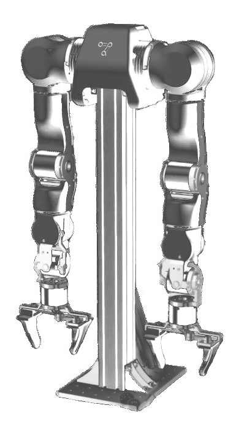
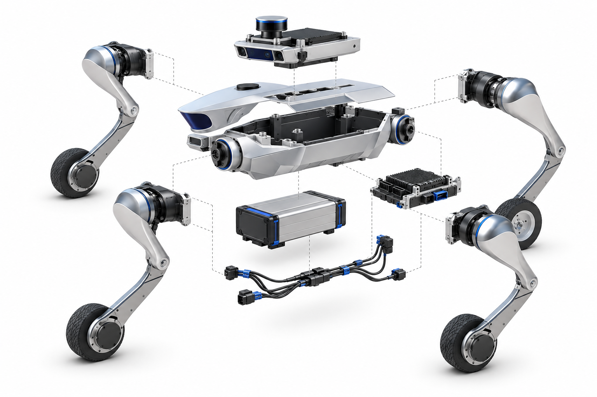
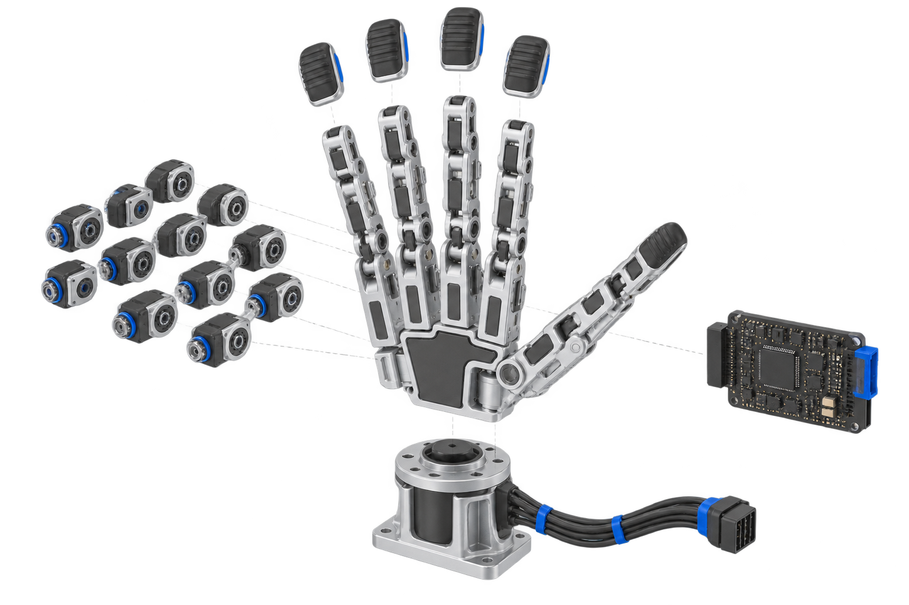
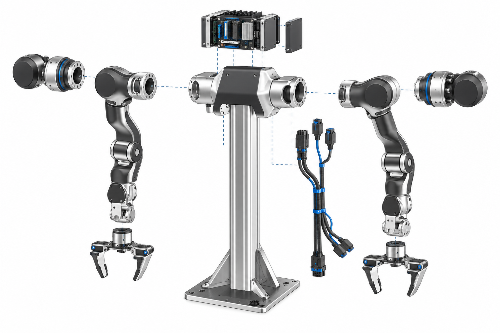

Robot hardware,
built for scale.
A U.S. robotics hardware supply platform.
Proprietary joints. Manufacturing expertise.
An AI workflow from concept to production.
The bottleneck is repeatable hardware.
A working robot becomes a business when its cost, quality and supply can repeat across every production batch.
Manufacturing expertise
The team brings prior robot delivery experience into design decisions, supplier selection and factory processes.
Owned module architecture
Micro drives and larger joint families provide reusable building blocks across hands, arms and mobile platforms.
A U.S. production path
Selected global inputs feed documented U.S. manufacturing, supported by product-specific sourcing and authorization work.
An established hardware market.
A focused point of entry.
36,766 robots ordered
A3 reported order value. Industry context, not FlatHill’s addressable component market.
+6.6% year over year
Modular actuation for robot builders
Start with dexterous manipulation and joint integration programs where hardware teams need cost control, customization and a production path.
Three buyer groups.
One component-led sales strategy.
Choose a buyer to see the first sale, contract and expansion path.
Win a place in the customer’s production design.
Shared modules reduce redesign effort and give the buyer a manufacturing transfer path.
- Buyer
- Hardware / motion-control engineering lead, with procurement approval.
- First offer
- Paid joint evaluation kits, integration support and a qualified production SKU.
- How we earn
- Evaluation purchase order, then engineering statement of work and scheduled component supply.
- Conversion evidence
- Customer acceptance tests, design release, origin records and a production purchase order.
- Expansion
- More units of the same module, then additional joints and robot programs.
Sell usable hardware for the next experiment.
Modular hardware creates a direct feedback channel for engineering and reliability improvements.
- Buyer
- Robotics research lead, lab manager or applied-AI engineering team.
- First offer
- Hand / arm development kits, spares, interfaces and paid setup support.
- How we earn
- Hardware purchase plus optional integration work. Research purchases do not imply future volume.
- Conversion evidence
- A paid delivery and an accepted experimental workflow, followed by a repeat purchase.
- Expansion
- Additional rigs, replacement modules and later ROSE workflow pilots.
Deliver a subsystem that fits a customer application.
FlatHill supplies reusable hardware while the integrator owns application deployment.
- Buyer
- Integrator engineering director or a robot OEM working with an end customer.
- First offer
- Configured joint, hand or arm assemblies. Mobile platforms enter after product-specific qualification.
- How we earn
- Paid engineering milestones, assembly orders and agreed spares / support terms.
- Conversion evidence
- Site acceptance, system-level qualification and a repeatable bill of materials.
- Expansion
- Replication across sites and service inventory, then manufacturing capacity and ROSE.
| Buyer | Initial sale | Expansion |
|---|---|---|
| Robotics OEMs | Paid joint evaluation kits, integration support and a qualified production SKU. | More units of the same module, then additional joints and robot programs. |
| AI & research teams | Hand / arm development kits, spares, interfaces and paid setup support. | Additional rigs, replacement modules and later ROSE workflow pilots. |
| Automation integrators | Configured joint, hand or arm assemblies. Mobile platforms enter after product-specific qualification. | Replication across sites and service inventory, then manufacturing capacity and ROSE. |
A team shaped by robot delivery.
robots delivered in prior career programs
Team-provided track record in patrol robotics.
Not FlatHill shipments.
Hardware architecture
Integrated engineering across joint modules, compact mechanisms, drive electronics and complete robot platforms.
Production engineering
Prior robot programs span design iteration, supplier coordination, production transfer and field delivery.
Embedded systems and control
Team materials describe a decade of experience in embedded hardware, sensor fusion and motion planning.
One actuation foundation.
Two scales of motion.

M01 / M01 Neo / M02
Compact joint architecture for fingers and small end effectors. Integrated transmission, sensing and control.

WZ53 / WZ79 / WZ119
Reusable joint architecture for larger mechanisms. Source design targets span 7 / 15 / 60 N·m.
Cost control starts before the factory.
Measure cost per good unit. Keep this operating-cost model separate from the origin-content calculation.
Fewer unique parts
Reuse actuator families, connectors and fixtures across products. Reduce tooling, inventory and redesign work.
Design for the process
Match tolerances to function. Standardize assembly sequence and end-of-line tests before scaling orders.
Measure the delivered cost
Track purchase cost, duties, yield loss, rework and warranty cost for each released configuration.
Four platforms. Shared engineering.

04Dual-arm platforms
Manipulation systems with modular joints and end effectors.
Explore BOM ↗A clear path from first kit to recurring supply.
Select a stage to inspect the offer, payment model and conversion gate.
Turn interest into a paid hardware evaluation.
Robotics OEMs and applied-AI teams with a defined engineering problem.
A selected module or development kit, documented interfaces and a test procedure.
A purchase order for the evaluation hardware, with separately scoped integration support.
The buyer accepts the engineering results and funds the next integration step.
Paid evaluations, time to first working integration and accepted test results.
Become part of the customer’s released design.
A buyer that has validated the module and is preparing a product or pilot build.
Customer-specific interfaces, a frozen BOM and a pilot production package.
Engineering milestones, change-control terms and a pilot-lot purchase order.
The customer approves the design, supplier qualification and production acceptance criteria.
Design wins, pilot yield, quote-to-order conversion and cost per good unit.
Convert design wins into scheduled shipments.
OEM production teams and integrators replicating a validated configuration.
Qualified modules or assemblies with serial traceability and agreed spares support.
Scheduled purchase orders or supply agreements with volume, lead-time and quality terms.
Repeat orders and contribution economics justify dedicated U.S. capacity.
Repeat-order share, on-time delivery, realized gross margin and warranty returns.
Sell the workflow and production capacity around the hardware.
Existing hardware customers with repeat engineering and manufacturing needs.
Validated software workflows and qualified production cells with a clear responsibility boundary.
Software or service agreements after pilot acceptance. Capacity reservations only against actual demand.
Customers complete paid workflows and the cells meet quality and unit-economics targets.
Software renewal, attach rate, engineering hours saved and cell utilization.
| Stage | Revenue | Advance when |
|---|---|---|
| 01 Evaluate | Evaluation-kit revenue | The buyer accepts the engineering results and funds the next integration step. |
| 02 Design in | Engineering fees + pilot hardware | The customer approves the design, supplier qualification and production acceptance criteria. |
| 03 Repeat | Recurring component / assembly sales | Repeat orders and contribution economics justify dedicated U.S. capacity. |
| 04 Expand | ROSE subscriptions + manufacturing fees | Customers complete paid workflows and the cells meet quality and unit-economics targets. |
Revenue scales with customer production.
Interactive planning case. Change the assumptions to see the economics.
A steady-state production cohort, not a forecast, pipeline or TAM estimate. Prices, volumes and margins are unverified assumptions. No kit, engineering, software or whole-robot revenue is added here.
U.S. manufacturing.
A disciplined global input strategy.
Source selected inputs
Qualify commodity electronics and motor inputs, including eligible China-sourced parts. Record maker, origin and firmware provenance.
Manufacture in the U.S.
Build qualifying component assemblies and end products through U.S. operations or approved manufacturing partners.
Release a documented SKU
Tie supplier declarations and cost records to serial numbers, tests and the applicable authorization path.
These are separate measures. A U.S. invoice alone does not establish U.S. manufacture or component origin. Actual sourcing remains to be validated.
Compliance is a product release discipline.
Illustrative domestic component-cost target.
Supported by actual U.S. manufacture and an evidence file for each SKU.
Classify the finished product
The current FCC determination targets defined mobile robotic devices. Fixed industrial robots are excluded from that definition.
Validate manufacture and component cost
The referenced FAR test generally requires U.S. manufacture and domestic component cost above 65% through 2028, then above 75% from 2029. Exceptions require review.
Complete the authorization path
Covered List treatment and normal equipment authorization remain separate release checks. Conditional approval is a product-specific alternative where available.
Design control makes localization possible.
FlatHill’s proposed advantage is a transferable engineering package: module designs, drawings, firmware and manufacturing know-how.
Own the engineering decisions
Management reports self-developed joint module families and complete technical drawings. Confirm assignments and third-party licenses per product.
Build the U.S. rights package
Maintain an inventor and employer chain of title, U.S. filing strategy and product-specific freedom-to-operate analysis.
Keep capitalization transparent
Management states a U.S.-first financing and commercialization strategy. Confirm the FlatHill entity’s cap table separately from team members’ prior ventures.
ROSE connects engineering
to manufacturing.
From scratch to demo
Turn requirements into a buildable design and a tested prototype.
Explore workflow ↗From demo to mass production
Turn a working design into a controlled manufacturing package.
Explore workflow ↗Management reports an early software prototype. The workflows shown here define the intended product scope, not verified shipped functionality.
From a requirement to a testable prototype.
From scratch to demo / Select a step to inspect its deliverable.
A structured engineering brief
ROSE would organize payload, envelope, duty cycle, environment and cost constraints.
A requirements record with measurable acceptance tests.
A versioned output linked to its inputs and engineering review.
An engineer approves the assumptions and test plan.
Development time and first-build pass rate.
A versioned prototype package
ROSE would propose module selections and mechanical / electrical interfaces, with a preliminary BOM.
CAD interfaces, control scaffolding and a sourcing list.
A versioned output linked to its inputs and engineering review.
The selected modules meet the stated operating envelope.
Development time and first-build pass rate.
Simulation and interface checks
ROSE would connect motion, load and interface checks to the design revision.
A review record with exceptions and required design changes.
A versioned output linked to its inputs and engineering review.
Engineers resolve critical findings before authorizing a physical build.
Development time and first-build pass rate.
Bench results tied to requirements
ROSE would compare measured prototype results with the original requirements.
A tested demo, measurement log and next-iteration list.
A versioned output linked to its inputs and engineering review.
The prototype demonstrates the agreed task under defined conditions.
Development time and first-build pass rate.
| Step | Output | Release gate |
|---|---|---|
| Requirements | A requirements record with measurable acceptance tests. | An engineer approves the assumptions and test plan. |
| Build plan | CAD interfaces, control scaffolding and a sourcing list. | The selected modules meet the stated operating envelope. |
| Review | A review record with exceptions and required design changes. | Engineers resolve critical findings before authorizing a physical build. |
| Demo | A tested demo, measurement log and next-iteration list. | The prototype demonstrates the agreed task under defined conditions. |
From a demo to a repeatable production release.
From demo to mass production / Select a step to inspect its deliverable.
A design that fits the intended process
ROSE would review tolerances, assembly sequence and shared parts against manufacturing constraints.
A revised design, process plan and list of critical characteristics.
A versioned output linked to its inputs and engineering review.
Production engineering approves the process and tolerance assumptions.
Pilot yield, cost per good unit and release-cycle time.
A qualified sourcing package
ROSE would connect approved parts to quotes, lead times, origin evidence and alternates.
A controlled BOM and approved supplier list.
A versioned output linked to its inputs and engineering review.
Cost, origin and supplier qualification records support the released SKU.
Pilot yield, cost per good unit and release-cycle time.
Repeatable work instructions and tests
ROSE would generate assembly instructions, fixture requirements and test plans from the released design.
Work instructions, station tests and a traceability schema.
A versioned output linked to its inputs and engineering review.
The pilot team can execute the same process and record the same evidence.
Pilot yield, cost per good unit and release-cycle time.
A production release supported by data
ROSE would compare pilot yield, reliability and cost with the release criteria.
A lot record, nonconformance actions and release recommendation.
A versioned output linked to its inputs and engineering review.
Authorized engineers approve volume production or request another pilot.
Pilot yield, cost per good unit and release-cycle time.
| Step | Output | Release gate |
|---|---|---|
| DFM | A revised design, process plan and list of critical characteristics. | Production engineering approves the process and tolerance assumptions. |
| Suppliers | A controlled BOM and approved supplier list. | Cost, origin and supplier qualification records support the released SKU. |
| Control plan | Work instructions, station tests and a traceability schema. | The pilot team can execute the same process and record the same evidence. |
| Pilot lot | A lot record, nonconformance actions and release recommendation. | Authorized engineers approve volume production or request another pilot. |
The U.S. factory scales by proven process.
Start with flexible production. Automate the stable, repetitive work as demand and process data justify investment.
Manufacturing partners
Qualify machining and assembly capacity. Validate fixtures, work instructions and origin records.
Gate: repeatable pilot lotsDedicated U.S. cells
Bring critical assembly, calibration and test under direct process control.
Gate: demand + yield + unit economicsLights-out processes
Automate selected stable operations with monitoring, exception handling and recovery.
Gate: sustained unattended reliabilityEvery production cycle improves the next.
Recursive improvement of robot hardware and its manufacturing process
ROSE uses design, test and production outcomes to propose the next controlled revision.
- ObserveYield, torque, thermal behavior, failures and field returns
- ProposeDesign alternatives, process settings and approved part substitutions
- ValidateSimulation, bench testing and controlled pilot lots
- ReleaseEngineer approval, versioning, traceability and rollback
Three stages, with measurable release gates.
| Stage | Build | Advance when |
|---|---|---|
01Now–2027Hardware supply | Module evaluation kits U.S. manufacturing transfer Documented sourcing | Paid pilots convert to repeat orders. Released SKUs pass cost, quality and origin review. |
022028–2029ROSE + U.S. cells | Two commercial software workflows Dedicated production capacity | Customer projects complete both workflows. Cell economics support additional automation. |
032030 onwardAdaptive manufacturing | Broader lights-out processes Validated improvement loops | Successive released revisions improve unit cost and yield with controlled reliability. |
Planning sequence. Timing depends on product readiness, demand, financing and regulatory requirements.
Capital converts engineering into U.S. supply.
Existing September 2026 financing range.
Final round terms remain subject to confirmation.
Fund the first repeatable U.S. production program and validate ROSE with real engineering work.
Capital deployment follows pilot demand and production gates. At the lower end, stage equipment purchases and reserve use.
The hardware foundation
for robot builders.
Manufacturing experience today.
ROSE-enabled engineering next.
A U.S. factory that improves with every release.
Quadruped: localize the highest-value assemblies.

| Assembly group | BOM | U.S. target* |
|---|---|---|
| 42% | 42 pp | |
| 16% | 16 pp | |
| 14% | 10 pp | |
| 12% | 12 pp | |
| 10% | 0 pp | |
| 6% | 0 pp | |
| Total | 100% | 80 pp |
*Percentage points of total component cost. Domestic contribution assumes each underlying component qualifies.
Joint assemblies are the largest dependency. Imported finished joints cannot become domestic merely through a U.S. reseller.
Dexterous hand: cost lives in the micro joints.

| Assembly group | BOM | U.S. target* |
|---|---|---|
| 48% | 48 pp | |
| 22% | 22 pp | |
| 12% | 2 pp | |
| 10% | 0 pp | |
| 8% | 8 pp | |
| Total | 100% | 80 pp |
*Percentage points of total component cost. Domestic contribution assumes each underlying component qualifies.
A shared micro-drive design concentrates cost engineering, calibration and replacement parts in one module family.
Dual arms: reuse joints, links and test fixtures.

| Assembly group | BOM | U.S. target* |
|---|---|---|
| 44% | 44 pp | |
| 18% | 18 pp | |
| 12% | 12 pp | |
| 10% | 0 pp | |
| 10% | 0 pp | |
| 6% | 6 pp | |
| Total | 100% | 80 pp |
*Percentage points of total component cost. Domestic contribution assumes each underlying component qualifies.
A fixed industrial arm configuration has a different FCC scope analysis from a mobile robot carrying the same arm.
Spherical robot: separate mobility from payload.

| Assembly group | BOM | U.S. target* |
|---|---|---|
| 24% | 24 pp | |
| 24% | 24 pp | |
| 14% | 14 pp | |
| 18% | 18 pp | |
| 12% | 0 pp | |
| 8% | 0 pp | |
| Total | 100% | 80 pp |
*Percentage points of total component cost. Domestic contribution assumes each underlying component qualifies.
A common drive core can support multiple sensing payloads. Origin and authorization follow the shipped configuration.
The 80% model has an explicit dependency.
Sum the cost of qualifying domestic direct components. Divide by the cost of all direct components.
Use one component boundary. Avoid counting both an assembly and its internal parts. Group totals in this deck are presentation rollups.
Same denominator
Exclude final robot assembly cost, sales margin and corporate R&D from the component-cost denominator.
Evidence per component
Record manufacturer, manufacturing location, cost basis and origin support. Treat unknown origin as foreign.
A supplier address is insufficient
The 42-point joint contribution is conditional. If it fails, the illustrated domestic share falls to 38%.
Commodity inputs are an engineering choice.
An official ESP32 example
Meta’s open-source Muse Gadget SDK supports off-the-shelf ESP32 boards and Linux devices.
It demonstrates an available development ecosystem. It does not establish FlatHill robot authorization or future component eligibility.
Official repository ↗Global sourcing can coexist with U.S. manufacturing
Tesla’s 2025 annual report describes parts from thousands of global suppliers. Its 2019 filing explicitly discussed U.S. production exposure to duties on Chinese components.
These are sourcing examples, not a robotics compliance precedent or a current China-content estimate.
2025 annual report ↗Evidence and assumptions stay distinct.
Source-supported materials
Internal product drawings, module concepts, team profiles and prior financing plan. Official FCC notices, FAR provisions, Meta repository and Tesla filings.
Management representations
Module IP ownership, current team participation, FlatHill financing / promotion history and the early ROSE prototype.
Planning assumptions
All four BOM allocations, the 80% domestic target, roadmap dates, manufacturing sequence and future software revenue model.
Product release documentation
Obtain supplier origin records and a costed BOM. Verify component boundaries, U.S. manufacture and applicable authorization.
IP diligence
Review assignments, third-party licenses, U.S. filing records and counsel’s product-specific FTO opinion. Patent registration alone does not establish FTO.
U.S. origin marketing
The FTC’s unqualified “Made in USA” standard requires all or virtually all U.S. content. This deck’s 80% model does not establish that claim.
Full source notes and the editable planning data accompany this presentation. Status snapshot: 12 October 2026.